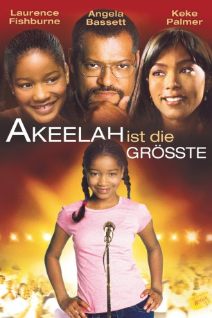
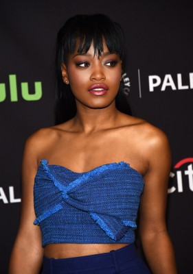
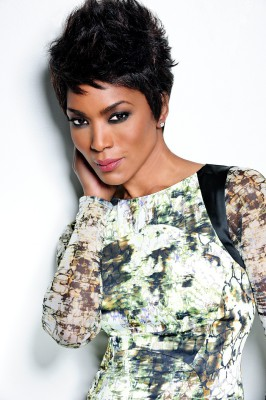
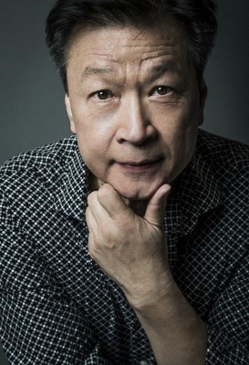
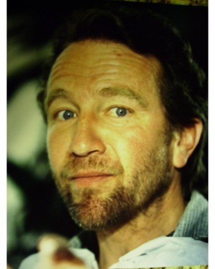
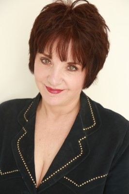
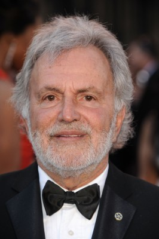
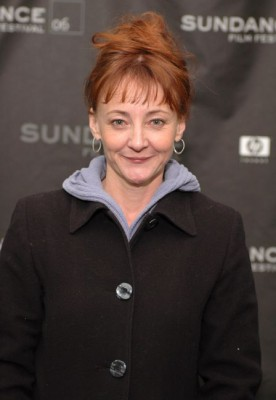
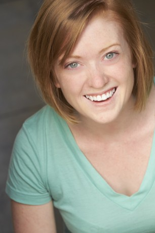

#6355 Akeelah ist die Größte
Alternativ: Akeelah and the Bee
 gesehen am 17.06.2017
gesehen am 17.06.2017
 
 IMDB-Wertung: 7.5 / 10
IMDB-Wertung: 7.5 / 10  Metascore: 0
Metascore: 0 
Wenn man wie Akeelah Anderson in einer sozial schwachen Gegend aufwächst und eine Schule besucht, deren Schüler aufgrund unterschiedlicher Ursachen oft Probleme mit dem Unterrichtsstoff haben, dann kann es von großem Nachteil sein, wenn man selbst einen schlauen Eindruck macht. Deswegen sieht sich Akeelah auch zahlreichen Widerständen ausgesetzt, als sie beschließt, am nationalen Buchstabierwettbewerb der USA teilzunehmen. Ihre Mitschüler halten davon ebenso wenig wie ihre Mutter Tanya, die sich nur dafür interessiert, dass ihre Tochter die Hausaufgaben macht. Aber Akeelah gibt nicht auf, denn buchstabieren macht ihr Spaß. Hilfe bekommt sie vom Englischlehrer Dr. Larabee, der in der Arbeit mit Akeelah sein eigenes Trauma überwinden kann, das er seit dem Tod seiner Tochter mit sich herumschleppt.
Jahr: 2006
Dauer: 108 Minuten
FSK:
Land: USA Studio: LionsgateTonspuren: DD5.1 - ,
Untertitel:
Auflösung: 1080p (1920x824) Größe: 11468 MB
Genre: Drama
Regisseur: François Velle
Drehbuch: Marc Basch
Soundtrack:
Darsteller:
-  Keke Palmer als Akeelah
 Laurence Fishburne als Dr. Larabee
Laurence Fishburne als Dr. Larabee-  Angela Bassett als Tanya
 Curtis Armstrong als Mr. Welch
Curtis Armstrong als Mr. Welch- J.R. Villarreal als Javier
- Sean Michael Afable als Dylan
- Sahara Ware als Georgia
- Lee Thompson Young als Devon
- Julito McCullum als Terrence
- Erica Hubbard als Kiana
- Eddie Steeples als Derrick-T
- Dalia Phillips als Ms. Cross
-  Tzi Ma als Mr. Chiu
- Jeris Poindexter als Steve
- Sara Niemietz als Polly
- George Hornedo als Roman
-  Craig Wasson als Ted Saunders
- Jeff Marlow als District Judge
-  Lee Garlington als Regional Judge
-  Sidney Ganis als Regional Pronouncer
- Austin Herrera Davis als Cheating Boy
- Janet Borrus als Cheating Boy's Mom
- Wolfgang Bodison als Akeelah's Father
-  Bonita Friedericy als Volunteer
 Lauren Sanchez als Reporter
Lauren Sanchez als Reporter- Fay Hauser als Woman on TV
-  Corina Boettger als Red-Haired Girl
- Todd Wagner als Regional Bee Assistant Judge
- Brittany Curran als District Speller #1
- Zac Gardner als Regional Speller #3
- Lance Norling als Boy in Wheelchair
- Kahlil Ashanti als Postman
- Rennie Cowan als Parent , uncredited
- Jemma Evans als Spelling Bee Audience Member , uncredited
- Andrea Frisby als Audience Member , uncredited
 Justin Rodgers Hall als Parent , uncredited
Justin Rodgers Hall als Parent , uncredited- Dava Hulsey als Finals - Judge , uncredited
- Carshenah Jefferson als National Spelling Bee Press Reporter , uncredited
- Rebecca Knight als Featured Speller , uncredited
- Kelron Mixon als Audience Member , uncredited
- Margaret Newborn als Parent , uncredited
- Michelle Stobaugh als Javier's Friend , uncredited
- Holly Traister als Finals Judge , uncredited
- Katie Kerwin McCrimmon als Herself
- Marjorie Harris als National Spelling Bee Head Judge
- Jacques Bailly als National Spelling Bee Pronouncer
- Krysten Leigh Jones als Tough Girl #1
- Amirah Hawkins als Tough Girl #2
- Chloé Conroy als District Pronouncer
- Marcus Hawkins Dungey als Chuckie
Datei: X:\2006(A-F)\Akeelah ist die Größte (2006, FSK, 1920x824).mkv seit 09.06.2017
Festplatte: HD 2005(G-Z)-2006(A-Z)
 Es gibt insgesamt 56 Filme in der Gruppe '2006(A-F)'
Es gibt insgesamt 56 Filme in der Gruppe '2006(A-F)'